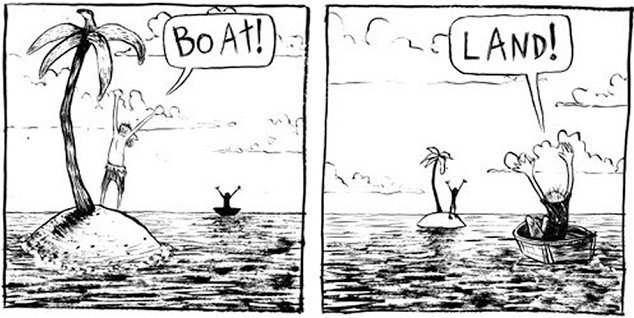
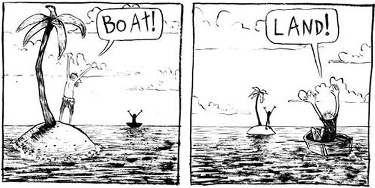
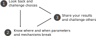
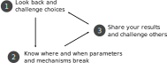
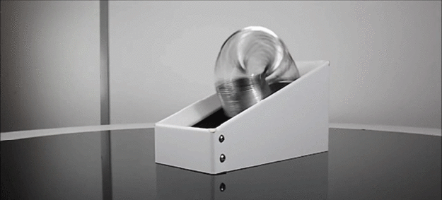
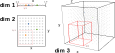
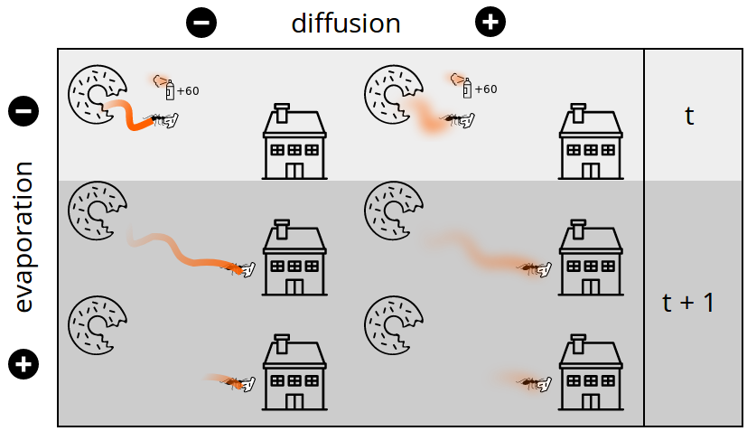
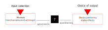

Exploring Agent Based Models from siluation to results production
Par Etienne Delay and Bruno Bonté September 18th 2018, MISSABMS Based on presentation maid for MAPS by E. Delay and S. Rey Coyrehourcq
Agent based model exploration

Explore to discuss
Discuss complementary conceptions of reality
 

Explore to make choices
know and act on path dependence
Choices generate paths leading to the same pattern
 

Explore to understand
The "virtual laboratory", an agitator of ideas but not only ...

expected / simulated behaviours ? failures ? robustness (s)?
The benefits of exploration
Exploring models is therefore a matter of organizing:
- healthy confrontation of points of view
- gaps measurement between expected and simulated internal behaviours
- hunting for bugs and limiting cases
The benefits of exploration

In other words, a systematic process that stimulates the surprise effect.
model exploration :
aproaches and problems

What are we talking about?
“Sensitivity analysis (SA) is used to explore the influence of varying inputs on the outputs of a simulation model” (Ginot et al. 2006).
“By exploring the sensitivity of model output to changes in parameters, we learn about the relative importance of the various mechanisms represented in the model and how robust the model output is to parameter uncertainty.” (Thiele et al. 2014).
- local sensitivity
- global sensitivity
Local sensitivity: How?

- +
- playful
- interactif
- exploratory
- incremental
- trial and error
- -
- unreliable
- time-consuming
- limited
- difficult to reproduce

A first step to systematize OAT

|  |
| a simple model, a complete experimental design: P1 x P2 x P2 x P3 |
Problem #1: Combinatorial explosion

Duration & Volumetry impossible to manage
Problem #2 : "Curse Dimensionality"
 of dimensions =
of dimensions =  coverage with equal nb of points
coverage with equal nb of points
An example with Netlogo
Ants model

Simple rules
 Use of traces or "pheromones"
Use of traces or "pheromones"
 Alignment with the strongest traces
Alignment with the strongest traces
Behaviour
Example of dynamics

Netlogo's BehaviorSpace

this configuration produces 4810 simulations
Stockasticity measurement
Measure the role of randomness in simulations?
Search in the data

Observe the combined effects of deposition AND diffusion of pheromones
Sensitivity analysis?
Some solutions include

Sioux methods ...
or change your approach!
Organize a tension between the Input - Output choices
Where can I pull?
Quantified criteria to "guide" an automated exploration
Formalize expectations
What values of (diffusion, evaporation) minimize the consumption time of the three food piles?

- Objective, minimize time to exhaust the resource
Use a genetic algo. as a calibration algo
Optimization in progress
Let's get back to our ants

Behavior Search is integrated with Netlogo since version 6
Pomic with R
Pomic (Pattern Oriented Modelling Information Criterion) is an R package to evaluate the impact of choices in pattern oriented modeling (Piou et al. (2009))
A short mid-term conclusion
- Genetic algo. rationalize the calculation a little
- Mais :
- We need to parallelize on a larger scale
- Use algo. designed for ABM exploration
High Performance Computing : OpenMole !

The architecture

L'interface dans un browser
Le modèle Ants dans OpenMole
val ants =
NetLogo5Task(workDirectory / "ants.nlogo", cmds) set (
// Map the OpenMOLE variables to NetLogo variables
netLogoInputs += (gPopulation, "gpopulation"),
netLogoInputs += (gDiffusionRate, "gdiffusion-rate"),
netLogoInputs += (gEvaporationRate, "gevaporation-rate"),
netLogoOutputs += ("final-ticks-food1", food1),
netLogoOutputs += ("final-ticks-food2", food2),
netLogoOutputs += ("final-ticks-food3", food3),
// The seed is used to control the initialisation of the random number generator of NetLogo
inputs += seed,
outputs += seed
)
Méthodes
- Data reconstruction
- Parameter estimation
- Sensitivity analysis
- Robustness assessment
- Optimisation
- Diversity research
- Hybrid, ex: optimisation + diversity
Exemple sur ants
//genetic algorithm
val nsga2 =
NSGA2(
mu = 200,
genome = Seq(gPopulation in (25.0, 250.0), gDiffusionRate in (0.0, 99.0), gEvaporationRate in (0.0, 99.0)),
objectives = Seq(food1, food2, food3),
replication = Replication(seed = seed, aggregation = Seq(median, median, median), max = 100)
)
//Workflow
val evolution =
SteadyStateEvolution(
algorithm = nsga2,
evaluation = ants,
parallelism = 500,
termination = 2000
)
Environnements
Environments taken into account
- Multi-thread
- Delegation through SSH
- PBS (on ssh)
- SLURM (on ssh)
- Condor (on ssh)
- SGE (on ssh)
- OAR (on ssh)
- EGI Grid (trough DIRAC)
- Adhoc Desktop Grid
Thank you for your attention

The OpenMole team is also a human adventure that is built on paper!
OpenMole Summer School ! 24-29 june 2019: https://exmodelo.org/
Go deeper
- Chérel G., Cottineau C., Reuillon R., 2015, « Beyond Corroboration : Strengthening Model Validation by Looking for Unexpected Patterns. », PLoS ONE 10(9).
- Thiele, Jan C., Kurth, Winfried and Grimm, Volker (2014) 'Facilitating Parameter Estimation and Sensitivity Analysis of Agent-Based Models: A Cookbook Using NetLogo and 'R'' Journal of Artificial Societies and Social Simulation 17 (3) 11 http://jasss.soc.surrey.ac.uk/17/3/11.html.
- ♡ David O′Sullivan, George L. W. Perry, 2013, Spatial Simulation: Exploring Pattern and Process, Wiley-Blackwell
- ♡ Volker Grimm, Eloy Revilla, Uta Berger, Florian Jeltsch, Wolf M. Mooij, Steven F. Railsback, Hans-Hermann Thulke, 2005, Pattern-Oriented Modeling of Agent-Based Complex Systems: Lessons from Ecology,Science, Vol. 310, Issue 5750, pp. 987-991.